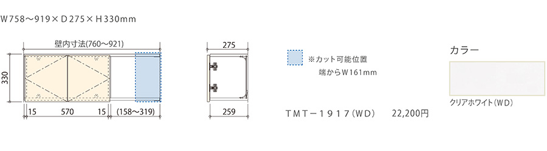

- TOP
- 空間活用収納シリーズ
WELL SPACEce-fit（セフィット）シリーズの空間活用収納
住まいの中にあるデッドスペースを解消して「生きた空間（＝収納）」として上手に活用するには、相応の知恵と工夫が必要です。こちらでは、デッドスペースがどんなものか、またその解消法や収納としての生かし方にはどんなものがあるかについてご説明します。また、アクシス株式会社が製造・販売する「ce-fit（セフィット）シリーズ」の空間活用収納についてご紹介します。
「空間活用収納」とは？
家の中をよく見渡してみてください。至るところに「うまく使えていない空間」がありませんか？ 何かを収納しているのは確かなのに、内部が整理できておらず、収納本来の役目をはたしていない――といったところがあれば、そこもチェックしてみてください。それが、いわゆる「デッドスペース」と呼ばれる場所です。
直訳すると「死んだ空間」。言葉のイメージはあまりよくありませんが、見方を変えれば「活用次第で生きてくる空間」と言い換えることもできます。つまり、デッドスペースが多い家はまだまだ収納を充実させる余地があるということ。ただし、そこを生きた空間にするには、相応の知恵や工夫が欠かせません。その知恵と工夫を凝縮したアイテムが、ce-fit（セフィット）の空間活用収納シリーズです。
なぜデッドスペースができてしまうのか
デッドスペースができてしまう理由をご存知ですか？
住まいを新築する際は、建築士や設計士がしっかりと図面を引いてムダなスペースができないよう気を付けているはずです。それでも、多くの住まいでデッドスペースは生まれてしまいます。「死んだ空間が生まれる」というのもおかしな表現ですが、確かにその通りなのです。
主な原因を挙げるなら、以下のようになるでしょうか。
- 間取りを把握せずに家具選びをしてしまっている
- 家具のサイズがぴったり合わずに寸足らずだったり、間延びしたりしている
- 収納家具を追加するときなどに、幅や高さなどをしっかり採寸していない
このように、空間と家具や収納のサイズが合わない、合わせることに注意を払っていないといったことが考えられます。こうしたミスマッチを解消すれば、デッドスペースを一掃することは決して難しくありません。
意外なところに収納を作れます
原因を知ってしまえば、家の中の至るところにあるデッドスペースが見えてきます。まずは、どこがデッドスペースなのかを把握することが空間活用の第一歩。とくに注意を向けたいのは、「角」「上」「下」です。
人の生活パターンから見て、この3つは見落としやすい場所の典型。なぜなら、私たちが日ごろ注目しているのは目線の高さとその上下というごく狭いスペースだからです。もちろん、注意が向きにくい部屋の角、家具と家具の隙間も同様です。こうした箇所にもっと注目して、そこがムダな空間になっていないか、家具のサイズがぴったりでないことで余計な隙間が生まれていないかをチェックすればよいのです。
幸い、最近では角や隅を埋める収納アイテムが多く市販されています。「ただの壁面」をモダンな棚に変身させるDIYキットも各社から出ています。そうした商品を利用するのもよいでしょう。しかし、こうした市販品ではサイズのミスマッチをなかなか解消できないかもしれません。
空いているスペースを生かしたくありませんか？
じつは、家の中で活用できていないスペースはかなりの数に上ります。前述のような市販の
収納アイテムで解消できないデッドスペースがあるなら、思い切ってce-fit（セフィット）シリーズの空間活用収納「ウェルスペース」を検討してはいかがでしょうか。
ウェルスペースには、トイレの水洗タンク裏のデッドスペースを活用する「トイレカウンターユニット」、頭上のデッドスペースを解消して見せる収納を可能にする「両壁吊戸収納」、厚壁を利用して限られた空間を収納に生まれ変わらせる「埋込収納」など、ユニークな商品をラインナップしています。上手に組み合わせて、住まいの収納力を一気に充実させてみませんか？
トイレカウンターユニット
製品寸法
- W715～913×D300×H900mm
- W715～913×D300×H900mm
両壁吊戸収納
製品寸法

埋込収納
製品寸法

※表示価格は希望小売価格です。消費税および施工費は含まれておりません。